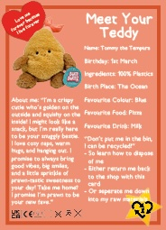

For this project, I worked alongside the company ReSkinned, looking at the sustainability of materials and textiles in a circular economy. I looked into teddies and soft toys as collecting teddies, such as jelly cats, has become extremely popular.
In order to keep the teddies within a circular economy, we explored extending the life cycle of soft toys through the standardisation of tags and labels. Looking into the policies and laws surrounding tags in the UK, we could understand how to expand these rules in order to redesign a tag to extend the lifecycle of soft toys. Our hope was that when people are better informed of what’s inside their beloved teddies and how to dispose of them properly, fewer teddies would end up in landfill.
We created a ‘Teddy Passport,’ which gives the teddy a human-like aspect. The passport can be given back to the shop along with the teddy as a buy-back scheme and then resold with the same passport. By giving Teddy a passport to record adventures, we inspire longer lasting love for your bear and a legacy to be passed on to future owners. This helps reduce waste from discarded toys and supports a more sustainable future. We also designed new tags and Pokémon style cards to the teddies providing information about how they were made, and how to deposed of them correctly.

